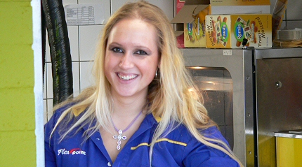

|
Roda JC - NAC (2-1) 3 april 2005 |
Roda JC
- NAC (2-1) 3 april 2005
Mascotje Wendy voor aanvang van de wedstrijd....
Een mooie zonnige zondag in het zuiden.
Tapjuffrouw Linda.
Mark heeft eindelijk een nieuwe lentefrisse vriendin ;-)
Zijn ze een beetje bekend gaan ze meteen achter een vette
zonnebril...
Onze gasten arriveren.

En alweer een gouden wissel van Flexpoint.
De petten-parade.
Scheissbube en consorten.
Deze Bochus-meëdsjes kopen Koempels zitplaats af met M&M's en
beloven
in mei, Rodagirl te worden. Vanaf nu dus geen M&M's meer...
Tijd om te voetballen.
De ratten uit Breda scoren meer hits op internet dan in het
gastenvak.
Een reactie op het "LODA"-spandoek in Breda.
WE SHALL NOT BE MOVED !!

Vrolijk vlagvertoon op west.
10...9...8....7... etc en dan INSOMNIA !!
Foto Frans uit Goch (D), elke wedstrijd erbij !!!
De eerste helft liet bedroevend zomeravondvoetbal zien.
Kimmie heeft het ook in de gaten en haalt daarom een half dozijn
kipcorns.
Een van de diverse halve kansen voor Roda.
En dan valt de goal uiteraard aan de verkeerde kant: in de 43e
min.
countert NAC middels Mendes da Silva naar een 0-1 voorsprong.
In de tweede helft is Roda wakker geworden. Al na 5 minuten
scoort Sergio
de gelijkmaker: 1-1, (49').
Dat drinkt al een stuk relaxter.
Er wordt aan beide zijden uitbundig gewisseld. Sonko voor Colinet
zorgde
voor meer dreiging.
De huiskamervraag: "Wie scoort hier nou 2-1?" Het is niet de
zojuist
ingekomen Brouwers, het is niet de door de stadionspeaker omgeroepen
Pa Modou Kah, maar.....Arouna Kone !! (77').
En Peter zag dat het goed was.....
De spelers bedanken het publiek. Pa moet eens wat meer gaan bier
drinken.
Deze buik kan echt niet!
Zo ben je prins carnaval en zo sta je op de foto met Jongen,
Filipovic en
Cissé.
Na weer als laatste de KO verlaten te hebben volgt er een
heerlijk malse
biefstuk in Spaanshuisken waarna we met de Boesjer Vrunj afzakken in
een lokaal café te Koningsbosch. Enkele bieren en dropshots later nadert
de man met de hamer. Snel naar huis dus.....